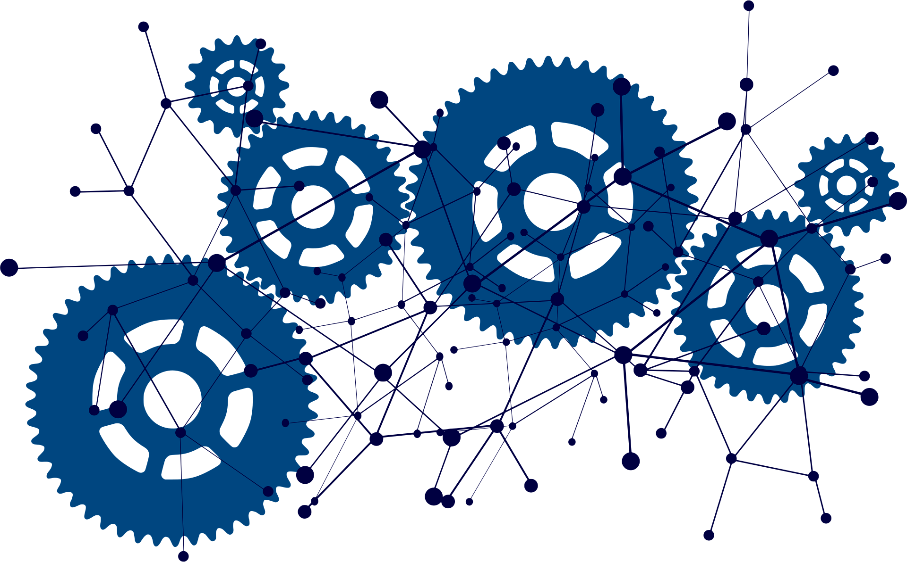
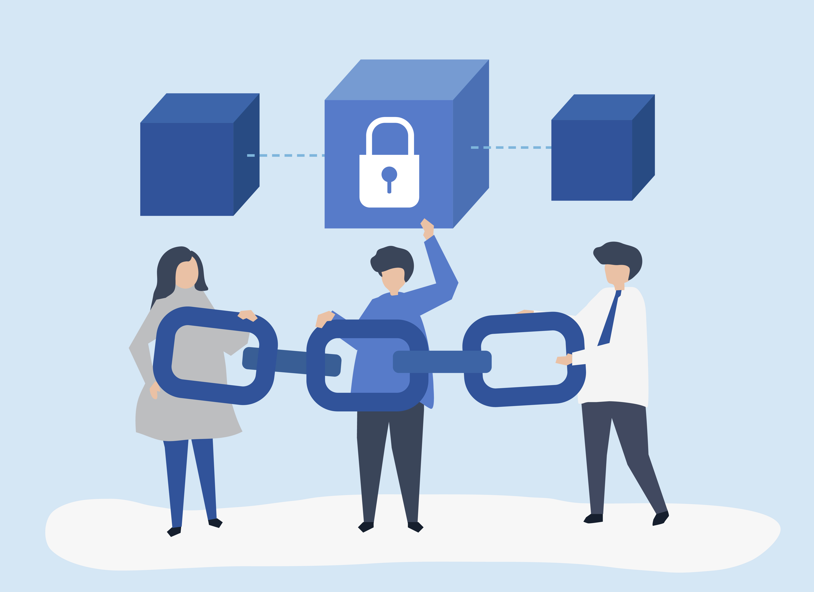

Notre Modèle Économique : un circuit court auto-alimenté
Votre pouvoir décisionnaire de consommateur c'est votre capital financier.
Notre modèle économique repose sur un principe simple : transformer le pouvoir décisionnaire quotidien du consommateur en capital financier, tout en réinjectant cette valeur dans un circuit court auto-alimenté. Ce mécanisme se déploie en deux grandes phases.
1. Phase de démarrage : les Enchères Citoyennes (amorçage)
L'objectif est de constituer le capital initial nécessaire au lancement du Fonds des Consommateurs et de sélectionner les partenaires stratégiques qui s'engagent à respecter l'éthique du projet.
Les jetons primaires
Chaque nouveau membre inscrit reçoit gratuitement un jeton numérique unique (NFT ou assimilé) par secteur d'activité mis en concurrence. Ces jetons sont la première matérialisation de sa fidélité et de son pouvoir décisionnaire multi-sectoriel.
Les enchères
Ces jetons sont mis aux enchères sur la plateforme. Les grandes entreprises candidates rivalisent en enchérissant pour devenir sponsors officiels et obtenir l’exclusivité de leur catégorie.
Les mises collectées par ces ventes constituent le capital de lancement du Fonds des Consommateurs.
Résultat : le consommateur monétise son engagement initial, et le Fonds est lancé grâce aux apports des sponsors qui s'engagent par contrat.

2. Phase de fonctionnement : la boucle du Proof of Purchase (PoP)
Une fois le Fonds lancé, le modèle assure l'alimentation continue de l'épargne du consommateur en transformant chaque décision d'achat labellisée en valeur monétaire (j’achète donc j’épargne).
Génération de l'épargne en temps réel
Le consommateur membre de la communauté possède des jetons numériques latents (en attente d’activation) représentant son potentiel d'épargne et son pouvoir décisionnaire.
Le Proof of Purchase (PoP) valorise ces jetons : chaque achat labellisé chez un commerçant partenaire génère une Preuve d’Achat qui déclenche automatiquement la mise en vente des jetons latents du consommateur. L’achat de ces jetons par le partenaire provoque leur activation et leur conversion en monnaie fiduciaire, créditée sur un compte d’épargne dédié. Le jeton passe de latent à actif.
Régénération du potentiel : dès que le consommateur vend ses jetons activés, il reçoit la même quantité de jetons latents pour reconstituer son stock — garantissant un potentiel d'épargne continu.
Le financement circulaire et accéléré
Les jetons activés sont achetés par le commerçant et/ou le fournisseur partenaire. En les achetant, les entreprises valident la transaction et alimentent directement votre nouvelle épargne.
C’est votre pouvoir de décision de consommateur (votre fidélité et votre engagement) qui crée le capital.
Mon épargne se multiplie
1. Votre épargne devient un capital-investissement :
L’épargne que vous créez en permanence par vos achats est investie en temps réel par le Fonds des Consommateurs.
Pour fluidifier le réseau, le Fonds agit comme un service d’affacturage unique : il garantit la liquidité immédiate des fournisseurs (contrairement à l’affacturage classique qui finance les banques) sans contraindre les distributeurs au paiement en temps réel.
Cette accélération des flux permet à l’entreprise d’accéder à un financement moins onéreux et favorise la rémunération en temps réel de votre capital-investissement.
2. Votre rémunération accélérée :
Lorsqu’un achat de jetons est déclenché par un PoP, l’entreprise partenaire (A, B, C…) rémunère votre capital-investissement en versant une contribution majorée — un supplément ajouté au prix normal.
Cette contribution est collectée par le Fonds qui, via le Smart Contract, la répartit automatiquement et crédite aussitôt votre compte d’épargne.
Une partie de ce supplément sert aussi à récompenser l’ensemble des membres ayant participé au cycle, garantissant une redistribution collective, transparente et équitable.
3. Une croissance continue :
Cette contribution produit des intérêts. Ceux-ci sont automatiquement réinjectés, à la vitesse du numérique, pour faire croître votre épargne en continu — de manière fluide et transparente.
En résumé
Votre épargne finance les entreprises partenaires, et l’écosystème vous rémunère en retour. Chaque achat labellisé nourrit un cycle vertueux de richesse partagée, où votre argent reste actif et productif. Les entreprises bénéficient d’un capital plus souple et moins coûteux (risques réduits, affacturage à coût très réduit, visant la gratuité à terme).
Tout est automatisé : l’algorithme et le Smart Contract assurent la traçabilité et la valorisation quasi instantanée de chaque transaction.

3. Qui fait quoi ? (La triple validation en action)
Le succès du modèle repose sur le rôle précis de chaque acteur au sein de la boucle de triple validation (PoP).
| Acteur | Rôle dans le modèle économique |
|---|---|
| Le Consommateur | Exerce son pouvoir et active le capital : achète des produits et services labellisés, vend ses jetons pour développer son épargne en monnaie fiduciaire. |
| Le Partenaire (Commerçant / Fournisseur) | Valide la transaction et finance l’épargne : achète les jetons du consommateur pour garantir sa fidélité et bénéficie d’un accès facilité au financement du Fonds des Consommateurs. |
| Le Fonds des Consommateurs | Contrôle, investit et pérennise : vérifie les flux, contrôle le respect des engagements et finance les entreprises qui participent activement au développement de l’épargne du consommateur, selon les valeurs éthiques de la communauté. |
Cette articulation garantit l’intégrité du système et l’alignement des intérêts à chaque transaction.
